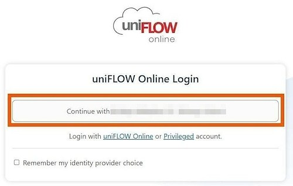
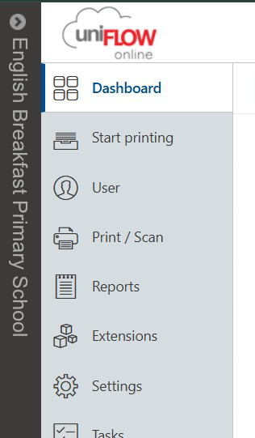
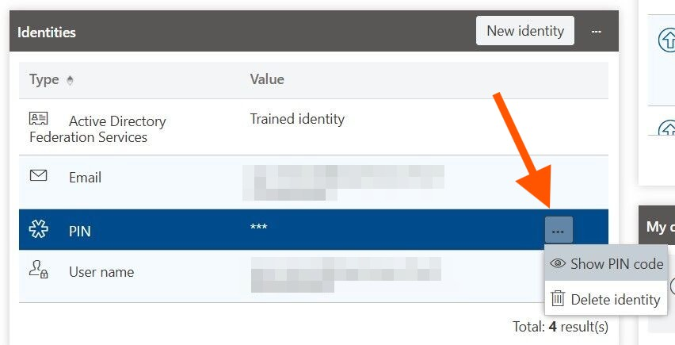

Forgotten PIN Code?
If your school uses the uniFLOW system with Canon printers, these steps will guide you through retrieving your printing PIN. If your school uses a different printing setup, please contact your IT Engineer for further assistance.
Visit your school's uniFLOW website. The login link is unique to each school, but the process remains the same:
- Bishop Aldhelms Primary - bishop-aldhelms-ce-p.uk.uniflowonline.com
- Wimborne First - wimbornefirstschool.uk.uniflowonline.com
- Pimperne Primary - pimperneprimaryschool.uk.uniflowonline.com
- Henbury View First - henbury.uk.uniflowonline.com
💡 Please contact your IT Engineer if your school is not on this list.
Once the login window appears, simply click the button labeled "Continue with [Your School Name]".

From the menu on the left side of the screen, select the Dashboard option.

In the Identities section of your dashboard, locate the PIN option. Click on the three-dot menu and select Show PIN code to view your credentials.
